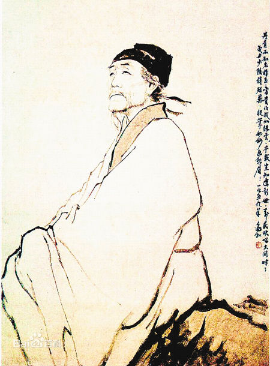

超链接示例
1-外部链接
百度一下
2-内部链接
文字超链接
唐诗鉴赏-李白
图片超链接

3-内部链接之锚点链接
先秦时代
汉唐盛世
封建皇权
近现代
四大名著
先秦时代
三皇
五帝
夏
商
周
春秋
战国
汉唐盛世
秦
汉
三国
两晋
南北朝
隋
唐
封建皇权
五代十国
宋
元
明
清
近现代
北洋军阀
南京国民政府
中华人民共和国
四大名著
的
发生背景
西游记
以唐太宗时期
玄奘西去天竺取经
为蓝本,
加入各种民间鬼怪传说.
三国演义
以东汉末年,天下三分为故事背景,描写了从黄巾之乱到司马氏统一中国这一时期的人与事.
水浒传
以北宋时期朝廷腐败为故事背景,官逼民反,逼上梁山,替天行道.
红楼梦
以明朝一大官阀家族为故事背景.